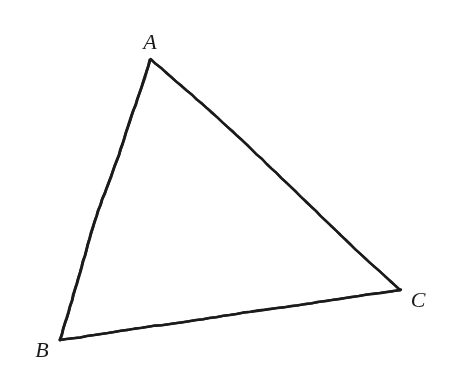
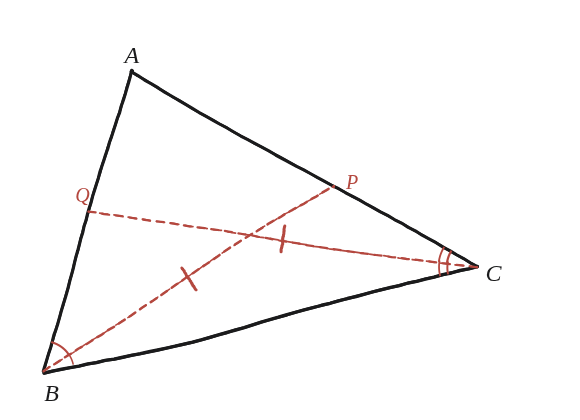

Demostra que, si dues bisectrius d'un triangle són iguals, el triangle ha de ser isòsceles.

Una aposta, abans de raonar
Aquest és un dels resultats clàssics de la geometria elemental que costa molt més de demostrar del que sembla a primer cop d'ull —es coneix com el teorema de Steiner–Lehmus. La intuïció diu que sí, ha de ser isòsceles. Aquesta vegada la intuïció encerta, però val la pena notar que no és evident per què, i que un argument ràpid del tipus "és simètric, doncs..." no en constitueix una demostració vàlida.
Un sentit és fàcil; l'altre no
Si el triangle ja fos isòsceles, és fàcil veure per simetria que les dues bisectrius (dels dos angles iguals) fan la mateixa longitud —aquest sentit és senzill de demostrar. Aquí es demana l'altre sentit: si les dues bisectrius surten iguals, cal deduir que el triangle era isòsceles. Aquesta implicació inversa és la que necessita una demostració real.
La construcció, i què confirma la hipòtesi
El triangle es dibuixa expressament no isòsceles a ull, amb dues bisectrius (des de B i des de C). Els arcs distingeixen quina bisectriu parteix quin angle. Les ratlletes a BP i CQ marquen la hipòtesi que se suposa —que aquestes dues longituds es fan iguals— no pas una mesura d'aquest dibuix concret: en un triangle realment escalè com aquest no poden sortir exactament iguals en píxels. Aquesta és tota la gràcia del teorema: si ho fossin de veritat, el triangle seria isòsceles.

Primer, quant fa una bisectriu
Sigui t la bisectriu des de B, i siguin a i c els dos costats que es troben en aquest vèrtex. La bisectriu parteix el triangle en dos, i l'àrea es pot escriure de dues maneres (Qüestió 80): la sencera és ½·a·c·sin B, i les dues meitats sumen ½·c·t·sin(B/2) + ½·a·t·sin(B/2). Igualant i fent servir sin B = 2·sin(B/2)·cos(B/2) (Qüestió 88), el factor sin(B/2) es cancel·la i queda tB = 2ac·cos(B/2) / (a+c).
La demostració, per reducció a l'absurd
Suposem que el triangle no és isòsceles i que, per exemple, b > c. Dues conseqüències, i les dues empenyen cap al mateix costat. La primera: a costat més gran, angle oposat més gran, o sigui B > C; com que B/2 i C/2 són tots dos aguts i el cosinus hi decreix, cos(B/2) < cos(C/2). La segona: escrivint la fracció al revés, (a+c)/(2ac) = 1/(2c) + 1/(2a), es veu que 2ac/(a+c) creix quan creix qualsevol dels dos costats; de b > c se'n segueix 2ab/(a+b) > 2ac/(a+c). Multiplicant les dues desigualtats: tC > tB.
Per què això tanca la qüestió
S'ha arribat a tC > tB, que contradiu la hipòtesi que les dues bisectrius són iguals. Per tant b > c és impossible. Intercanviant els papers de b i c, el mateix argument descarta c > b. Només queda b = c: el triangle és isòsceles, que és el que calia demostrar.
Sí —el teorema de Steiner–Lehmus. La clau és la longitud de la bisectriu, tB = 2ac·cos(B/2)/(a+c), que s'obté escrivint l'àrea de dues maneres. Si es suposa b > c, aleshores cos(B/2) < cos(C/2) i alhora 2ab/(a+b) > 2ac/(a+c), i multiplicant les dues desigualtats surt tC > tB: contradicció amb la hipòtesi. Per simetria tampoc no pot ser c > b, i per tant b = c. La demostració és indirecta —com totes les conegudes d'aquest teorema— però no és llarga.
Comprovació
Triangle de costats a=5, b=6, c=7. Els angles surten A≈44,42°, B≈57,12° i C≈78,46°, que sumen 180° ✓. Aplicant la fórmula: tB = 2·5·7·cos(28,56°)/12 = 70·0,8783/12 ≈ 5,124, i tC = 2·5·6·cos(39,23°)/11 = 60·0,7744/11 ≈ 4,225. Clarament diferents, i en el sentit que la demostració prediu: com que c=7 > b=6, ha de sortir tB > tC, i així és.
Totes les demostracions conegudes d'aquest teorema són indirectes, com aquesta: parteixen de suposar que el triangle no és isòsceles. Des del segle XIX es busca una demostració directa —que construeixi la igualtat dels costats a partir de la de les bisectrius sense passar per la negació— i no n'hi ha cap que tingui consens que ho sigui. Que un enunciat tan simple resisteixi això és, potser, més interessant que la demostració mateixa.